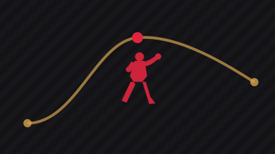
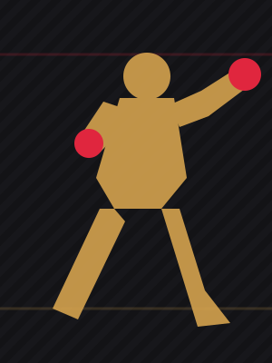

From a first-fight loss to unbeaten in the UFC
Salkilld's only defeat came in his pro debut. Everything since has been a finish.
9 min readAug 2026
Quillan Salkilld's career arc — from a first-fight submission loss in 2021 to finishing a former champion in his first UFC main event, five years later.

From Broome, Western Australia to a first-round finish of a former champion — five years, mapped fight by fight.

Lost his first professional bout by submission — still the only loss on his record today.
Rebuilt to a 12-1 record, pairing a BJJ black belt's ground game with real one-punch power.
Defeated Anshul Jubli at UFC 312, kicking off an unbeaten run inside the Octagon.
Beat Beneil Dariush, Jamie Mullarkey, Nasrat Haqparast, and Yanal Ashmouz — all legitimate UFC competition.
Submitted former KSW champion Mateusz Gamrot by rear-naked choke at 4:25 of round one at Meta Apex.

Salkilld's only defeat came in his pro debut. Everything since has been a finish.
A fourth career loss and a first-round finish raise the question: what's next for the former KSW champion?
Dariush, Mullarkey, Haqparast, Ashmouz, and now Gamrot — the pattern behind Salkilld's finishing streak.
Coaching adjustments and in-fight reads that shaped these career turns.
Read Corner Notes